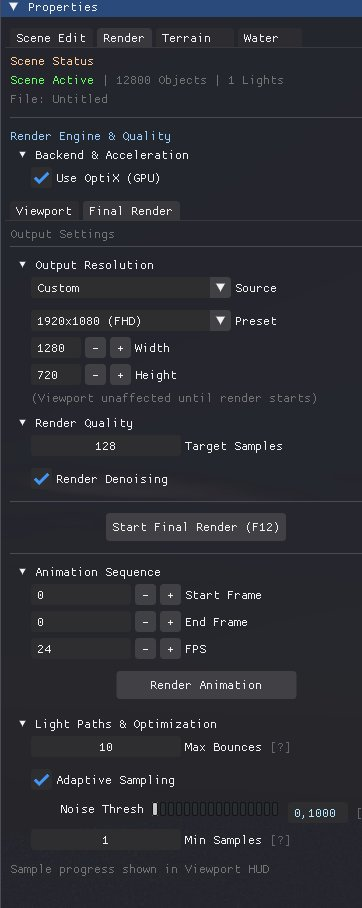

Render Settings

🚀 Render Header
1. Sampling

Sampling & Quality UI
Configure the path tracing quality and ray depth.
| Parameter | Description |
|---|---|
| Samples | Total rays per pixel. 1000+ for final. |
| Bounces | Max light bounces (Depth). 4 to 12. |
| Russian Roulette | Min depth before random termination (optimization). |
| Clamp | Limits max brightness to reduce fireflies. |
2. Denoiser (OIDN)

Denoiser UI
Intel Open Image Denoise integration.
| Setting | Description |
|---|---|
| Enable | Activates AI Denoising post-process. |
| Prefilter | Uses Albedo/Normal passes to preserve texture detail. |
| Quality | High (Slower) vs Fast. |
3. Hardware
OptiX (GPU) vs Embree (CPU)
OptiX: Uses NVIDIA RT Cores for max speed on RTX cards.
Embree: CPU fallback for compatibility or debugging.